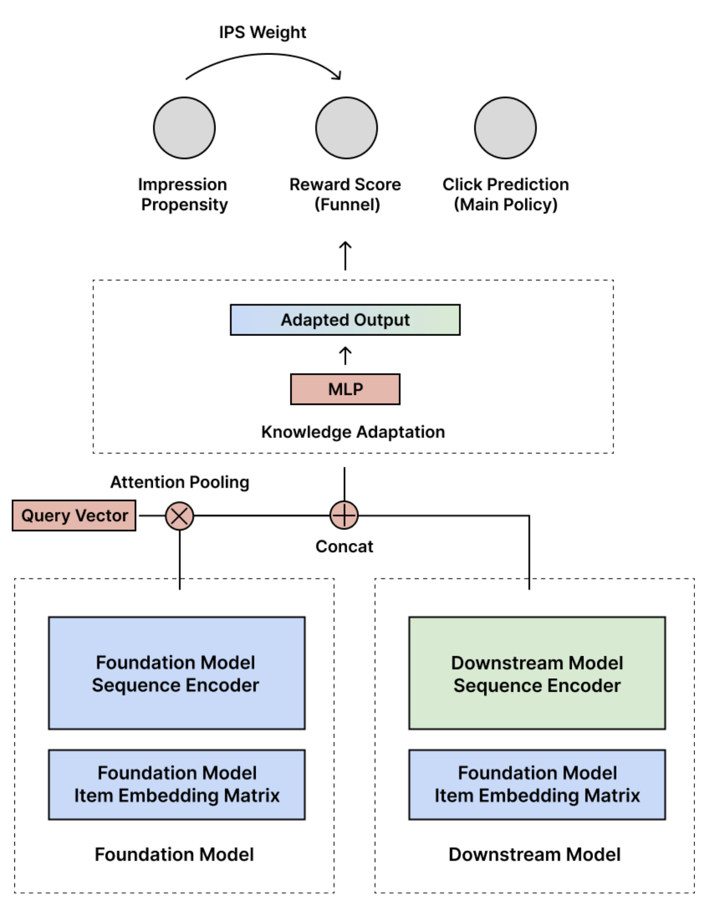
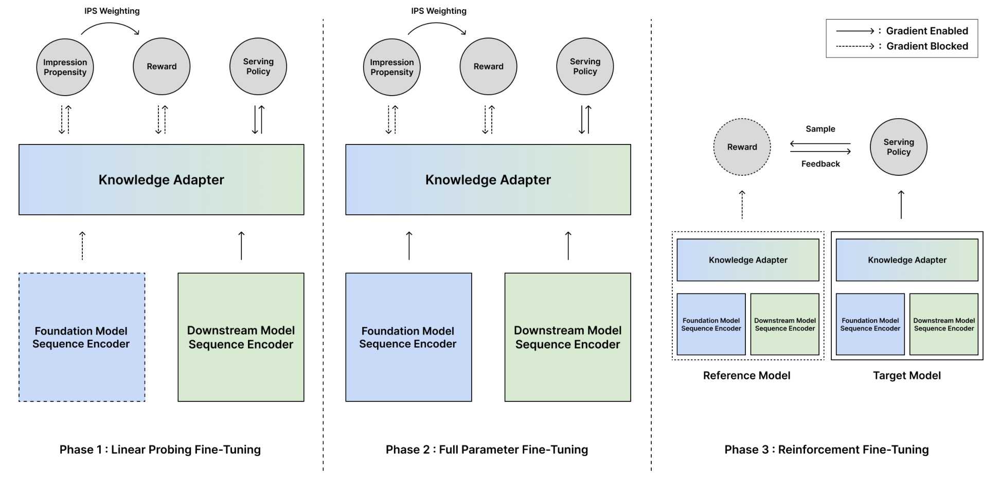
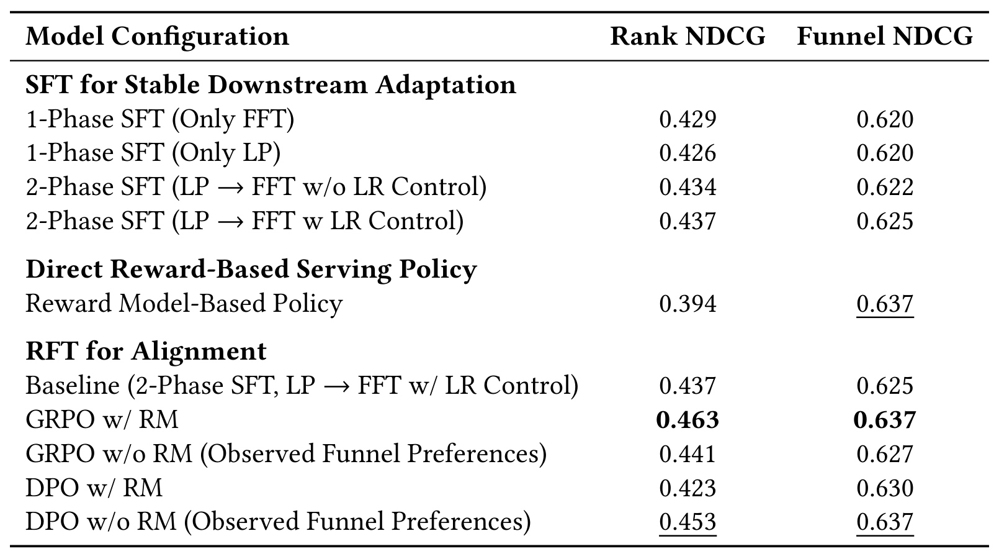
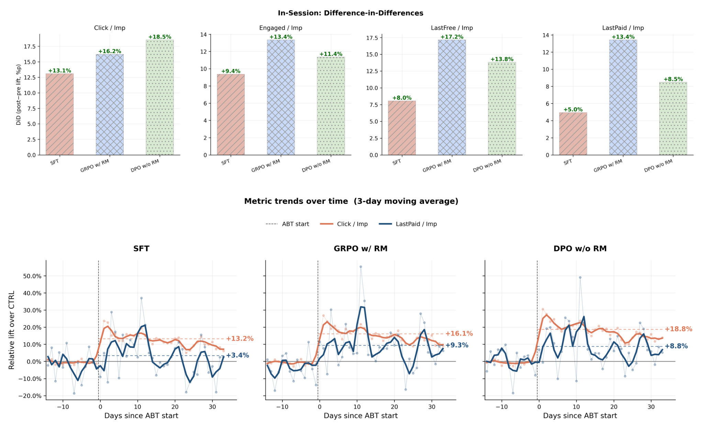

Progressive Alignment of Recommender Foundation Model through Multi-Phase Post-Training / 通过多阶段后训练渐进对齐推荐基础模型
这篇论文来自 NAVER WEBTOON 的 Oseong Choi、Hoeinn Kim、Jihoon Lee、Byungsoo Kang 与 Taeyeong Jang，发表于 2026 年 ACM RecSys Industry Track。它讨论的不是怎样再预训练一个更大的推荐基础模型，而是一个已经具备长期行为表征能力的 Foundation Model（FM）怎样安全地适配内容发现业务，并进一步与点击之后的深层消费目标对齐。论文入口为 arXiv:2608.06792，作者同时提供了已核验的参考实现。
同一个预训练推荐基础模型要服务不同场景时，一步式全参微调会让随机初始化的下游模块以高方差梯度扰动 backbone；而只靠点击等稠密监督得到的强排序策略，又未必与稀疏、延迟的业务漏斗指标一致。更直接地用长期业务标签训练 serving policy，也可能因为监督太稀疏而失去全库排序分辨力。
1. 背景和问题
1.1 从序列推荐器到可复用的行为先验
大规模自回归序列模型把用户的浏览、点击和消费轨迹压入统一表征，已经使推荐模型从单一任务的 ranker 逐渐变成可跨场景复用的行为先验。工业系统希望只维护一个共享的 FM backbone，再为首页、内容发现、续看、付费转化等 surface 配置轻量下游模块。这种 foundation–expert 方式的收益很直接：昂贵的长期行为建模可以共享，新场景只需学习自己的特征和输出头。然而，“预训练表征可复用”并不等于“任意下游任务都能一步接上去”。新建的 encoder 与 prediction head 在初始阶段没有稳定语义，若从第一步就把其梯度传进 backbone，FM 原本学到的行为结构可能先被噪声破坏，随后才勉强向新任务收敛。
论文把这一风险具体化为下游适配的优化次序问题。只做 Linear Probing（LP）可以保持 backbone，却限制了表征针对新场景的专门化；只做 Full Fine-Tuning（FFT）允许全模型变化，却会让随机下游模块和成熟 backbone 同时争夺表示空间。作者的判断是：两者不应被当作互斥选择，而应按先后顺序组合——先冻结 FM，让新模块学会在既有表示坐标系中工作；再解冻全模型，以较小的 backbone 学习率联合调整。这样，FFT 的起点已不再是一组随机下游头。
1.2 稠密排序监督与稀疏业务效用不是同一目标
第二个矛盾发生在“排得准”和“业务结果好”之间。点击标签覆盖广、反馈快，适合教策略在全候选库中拉开分数；但点击、点赞并不必然代表用户继续阅读免费章节、进入付费章节乃至完成付费内容。越接近长期价值，标签通常越稀疏、延迟越长，也越受历史曝光策略影响。若直接用最深漏斗标签训练 serving policy，模型或许能学到“什么样的内容更有价值”的方向，却不一定获得在成千上万候选中做细粒度排序所需的分辨率。
这解释了论文为何不把 reward model 当作最终 ranker，而是把稠密隐式反馈用于建立排序能力，把业务漏斗监督用于提供对齐方向。reward model 负责从曝光日志中估计内容带来的深层效用；serving policy 仍以点击等稠密信号为基础，再通过 Reinforcement Fine-Tuning（RFT）向 reward 指示的方向移动。二者的角色差异与 LLM 后训练相似：基础策略提供覆盖和生成/排序能力，reward 提供偏好方向；但推荐场景还有曝光偏差、巨大候选集和一个 impression 对应多个漏斗阶段，因此不能原样照搬文本 RLHF。
1.3 论文真正要验证的三件事
从实验设计看，论文实际提出三个可证伪的问题。第一，LP→FFT 是否真的比 only LP 或 only FFT 更稳定、更有效，且 backbone 的较小学习率是否有增量；第二，用业务标签训练出来的 reward model 能否直接 serving，还是必须作为 alignment signal；第三，在 reward model、观测漏斗偏好、GRPO 和 DPO 之间，哪种组合能同时保住全库点击排序能力并改善深层消费漏斗。作者不仅做离线消融，还在韩国 Webtoon 平台跑了一个月线上 A/B，因此这项工作的价值主要来自一条完整证据链，而不是提出一个陌生的 RL 算法。
需要注意，论文讨论的是一个约 7M 参数的 HSTU backbone 和特定内容发现 surface。“Foundation Model”在这里强调跨任务预训练与复用，不等于参数必须达到通用大模型的规模。相应地，结果能支持“渐进后训练在该工业场景有效”，不能自动外推到所有推荐 FM、所有市场或更大的生成式推荐模型。
2. 方法
2.1 Foundation–Expert 下游编码与三头架构
符号解释：(s) 是用户历史交互序列；(E\in\mathbb{R}^{T\times d}) 是长度为 (T)、维度为 (d) 的行为 embedding 序列；(operatorname{SequenceEncoder}) 是预训练 HSTU backbone。这个阶段保留了 FM 对长周期行为的通用编码能力，但尚未把可变长度序列变成一个可供下游 head 使用的固定向量。作者因此使用一个可学习查询向量做 cross-attention pooling：
符号解释：(q\in\mathbb{R}^{d}) 是可学习 query；(alpha\in\mathbb{R}^{T}) 是对各历史位置的注意力权重；(sqrt d) 用于缩放点积；(h_{\mathrm{fm}}) 是池化后的 FM 用户向量。这里的 query 不是某个候选 item，而是为当前下游任务学习“从长期序列中取什么信息”的汇聚器。与此同时，轻量 downstream encoder 对该 surface 的额外特征编码得到 (h_{\mathrm{ds}})，例如免费章节消费、付费章节消费和续读相关统计。最终表征为：
符号解释：方括号与分号表示向量拼接；(h) 同时带有 FM 的跨场景行为先验和内容发现 surface 的专用信息。这个融合向量送入三个职责不同的 head：serving policy 预测曝光后的点击，reward head 预测业务漏斗深度，propensity head 预测历史曝光概率。

Figure 1 的关键不是多头结构本身，而是三个头共享融合表征、却不承担相同的线上职责。下方左侧 FM sequence encoder 与 item embedding matrix 提供预训练基础；右侧 downstream encoder 读取场景特征；Attention Pooling 和 Concat 把两路信号送进 Knowledge Adapter。顶部 Click Prediction 是最终 main policy；Reward Score 表示漏斗效用；Impression Propensity 经 IPS 权重修正 reward 学习。图中的箭头说明 propensity 不是一个附带监控指标，而是 reward 可信度的一部分。线上排序最终依靠 policy，而 reward/propensity 主要在训练阶段提供方向和校正，这种拆分正是论文避免“稀疏效用模型直接承担全库排序”的基础。
2.2 六级业务漏斗、ordinal reward 与曝光校正
Webtoon 消费不是单个二元事件。作者把用户对某个 title 的最深行为表示为六级有序漏斗：impression、click、开始阅读、完成免费章节、进入付费章节、完成付费内容。若直接把六级当互斥分类，类别之间的顺序关系会丢失；论文改用 ordinal regression。设观测漏斗深度为 (f)，六级需要 (C=5) 个 cutpoint：
符号解释：(u) 是用户，(v) 是 title，(c) 是漏斗切点；(mathbb{I}(f>c)) 表示用户是否越过第 (c) 级。一个到达深层漏斗的样本会同时给前面多个 cutpoint 正标签，使模型学习“至少到达某一级”的累积概率，而不是把相邻阶段当作完全无关类别。日志只记录历史策略曝光过的内容；如果某 title 几乎没被曝光，其深层行为缺失不能简单解释为低价值，所以 propensity head 用下面的概率估计曝光机会：
符号解释：(hat z_{\mathrm{imp},u,v}) 是 impression head 的 logit；(sigma) 是 sigmoid；(hat p_{u,v}) 是历史策略下 user-item 被曝光的估计概率。作者随后构造截断且自归一化的逆倾向权重：
符号解释：D_r 是 reward 训练集合；τ_IPS 是截断阈值，避免极小 propensity 产生爆炸权重；w̃_{u,v} 是 batch/集合内自归一化后的 SNIPS 权重。截断降低方差，自归一化稳定损失尺度，但它们也引入偏差，所以该校正只能缓解历史曝光偏差，不能保证恢复真正的反事实效用。reward head 随后在五个 cutpoint 上做加权 BCE：
符号解释：(hat z_{u,v,c}) 是 reward head 对第 (c) 个门槛的 logit；(t_{u,v,c}) 是有序标签；内层求和合并各漏斗门槛，外层用 SNIPS 权重校正不同曝光机会。这使不同曝光概率的样本仍能共同训练有序门槛。训练好后，把越过各门槛的概率相加得到连续效用：
符号解释：(phi) 是 reward model 参数；(R_{phi}) 可以理解为期望跨越的漏斗门槛数量。它保留了“更深消费得分更高”的顺序信息，也为 GRPO 提供连续标量，但并不是经过校准的长期价值金额，更不是独立于历史策略的因果效应。
2.3 LP→FFT：先固定表征空间，再保守联合专门化
符号解释：(L_{mathrm{policy}}) 是点击预测交叉熵；(L_{mathrm{reward}}) 是上面的曝光校正 ordinal loss；(L_{mathrm{propensity}}) 是 impression BCE。论文未在公式中给三项额外权重，因此复现时需检查参考实现中是否采用等权或隐藏超参。LP 阶段冻结 FM sequence encoder，只训练 downstream encoder、knowledge adapter 和三个 heads。这样随机模块必须先适应 (h_{mathrm{fm}}) 的现有语义，而不能反向移动这套语义来迁就自己。FFT 阶段再解冻全部参数，让 backbone 和下游模块共同专门化；但作者把 backbone 学习率设为下游部分的十分之一。这个 discriminative learning-rate control 与 LP 的作用互补：LP 改善起点，较小学习率限制后续漂移。渐进性的核心不是简单多跑一个阶段，而是先消除随机头对 backbone 的高方差冲击，再开放受控的全模型协同。

Figure 2 把梯度边界画得很清楚。Phase 1 中 FM 外框和通向 adapter 的路径为虚线，说明 backbone 被阻断；downstream encoder、adapter 及三个 heads 仍接收梯度。Phase 2 中两路 encoder 都以实线进入 adapter，表明全参联合训练，但实际更新速度由差异学习率控制。Phase 3 复制 FFT checkpoint 得到 reference 和 target：reference 整体冻结，reward 也以虚线表示不更新；target 的 FM、downstream 与 adapter 共同构成可更新策略。图中 reward 对 target 输出“Feedback”，而 target 向 reward 提供候选“Sample”，对应 Algorithm 1 的 top-(K) 采样、reward 评分、优势计算和策略更新。训练结束后，reference、group sampling、reward 与 KL 都不进入普通线上打分链路，只保留 target serving policy。
2.4 GRPO/DPO：在冻结参照策略附近迁移业务效用
RFT 从两阶段 SFT checkpoint 出发，并保存冻结参照策略 (pi_{mathrm{ref}})。对每个用户状态，当前 policy 贪心选 top-32 候选，reward model 给每个动作 (a_k) 打分，再做组内标准化：
符号解释：K 是候选组大小；R̄ 与 σ_R 是组内 reward 均值和标准差；A_k 表示候选相对同组其他候选的优势。相对优势比绝对 reward 更适配“从一个候选组中排序”的任务，也省去 PPO 的独立 value network；但若组内 reward 过于接近，σ_R 很小会放大噪声，实际实现需要数值稳定项。
定义策略比率 ρ_k(θ)=π_θ(a_k)/π_ref(a_k)，单动作 clip 目标与总目标为：
符号解释：θ 是 target policy 参数；ε=0.1 限制单次策略比率变化；clip 防止高优势候选造成过大更新。论文最终最小化：
符号解释：第一项最大化 clipped advantage；第二项以 β=0.001 惩罚 target 偏离 reference；s 是用户状态。RFT 中 reward 与 propensity 冻结，只更新 policy head 和 FM backbone，且 backbone 学习率再低一个数量级。KL 保护的是已经稳定适配的 SFT policy，而不是最初的预训练 FM，因此它限制“业务对齐阶段”的漂移，不替代 LP/FFT 的适配职责。DPO 路线把候选组成偏好对 P={(a_i,a_j) | R_φ(a_i)>R_φ(a_j)}，或直接根据观测漏斗生成 preference；记 Δ_k=log π_θ(a_k)-log π_ref(a_k)，则：
符号解释：(a_i,a_j) 分别是 preferred 与 rejected 候选；Δ_i-Δ_j 衡量 target 相对 reference 增加了多少偏好差距；β 控制优化强度。DPO 省去在线式 advantage，但把连续 reward 压成二元顺序，可能丢失差距大小并放大 reward model 的小误差。后面的消融恰好检验了这一点：reward 作为 GRPO 的连续反馈效果好，转成 DPO 合成偏好却明显变差。
3. 实验结果
3.1 数据、训练预算与评估口径
离线数据来自韩国 Webtoon 生产平台最近三周的交互日志。作者随机抽取 10% 用户作为测试用户，并从该时间窗中的会话构造评估样本。预训练 backbone 是约 7M 参数的 HSTU；下游任务是内容发现，即推荐用户此前没有消费过的 title。额外 surface 特征包含免费章节、付费章节和续读相关长期统计。论文没有公开用户数、item 数、曝光量、正负样本比例或六级漏斗各级分布，因此无法从样本规模判断统计功效或稀疏程度。
为保证比较预算接近，only LP/FFT 各训练 100 epochs，两阶段方法把 50 epochs 分给 LP、50 epochs 分给 FFT。LP 学习率为 (10^{-3})，FFT 下游为 (10^{-4})，开启 LR control 时 FM backbone 为 (10^{-5})。RFT 再训练 50 epochs，policy 相关参数为 (10^{-5})，backbone 为 (10^{-6})；GRPO 和 DPO 都贪心选 top-32。这里各阶段总训练量并不相同：RFT 方法比两阶段 SFT 多 50 epochs，所以“RFT 增量”同时包含额外训练预算，论文没有给同等总 epoch 的纯 SFT 对照。
作者用两个互补 NDCG 避免把“业务效用”与“全库分辨力”混成一个分数：
符号解释：(z_u) 是用户对全 title 集 (V) 的预测分数；(y_v=1) 表示该 title 在评估会话曝光后被点击；(S\subset V) 是实际曝光集合；(z_u^{(S)}) 是只保留曝光 title 的分数；(r\in{0,\ldots,L}) 是最深漏斗阶段。Rank NDCG 检验全库点击排序，Funnel NDCG 检验已曝光集合内的深层消费顺序。后者受历史曝光集合限制，不能单独证明模型能在完整候选库发现高价值内容。
3.2 离线主结果与阶段消融

Table 1 首先支持渐进 SFT。Only FFT 的 Rank/Funnel NDCG 为 0.429/0.620，Only LP 为 0.426/0.620；LP→FFT 在没有差异学习率时升到 0.434/0.622，加入 backbone LR control 后再升到 0.437/0.625。相对 only FFT，完整两阶段方案的绝对增量是 +0.008/+0.005；其中 LR control 自身贡献 +0.003/+0.003。数值不大但两个指标方向一致，说明“先稳定下游模块，再小步联合调整”优于直接全参或永远冻结。
表中最有诊断价值的一行是 Reward Model-Based Policy：Funnel NDCG 达 0.637，与最佳方法并列，却把 Rank NDCG 降到 0.394，甚至明显低于 only LP。它准确揭示了论文开头的目标错位：稀疏漏斗监督可以在已曝光内容之间判断消费深度，但不足以在全库中细分点击可能性。因此 reward model 不是失败，而是适合作为方向信号、不适合作为唯一 serving score。若只汇报 Funnel NDCG，反而会错误选择最弱的全库 ranker。
从 0.437/0.625 的两阶段 SFT baseline 出发，GRPO w/ RM 达到 0.463/0.637，是两个指标的综合最优：Rank 绝对增加 0.026，Funnel 增加 0.012，同时把直接 reward policy 丢失的全库分辨力找回来。GRPO w/o RM 只有 0.441/0.627，说明连续 learned reward 比直接观测 funnel preference 提供了更强组内相对信号。DPO w/o RM 为 0.453/0.637，表现仅次于 GRPO w/ RM，而且不依赖 learned reward；DPO w/ RM 却降到 0.423/0.630。这个反差支持作者的解释：reward 的连续标量适合 GRPO advantage，硬转二元 pair 会丢掉差距大小，并把 reward 噪声翻译成错误偏好。由于表中没有方差、置信区间或多次运行结果，离线差异的统计稳定性仍未报告。
3.3 一个月线上 A/B：即时点击与深层漏斗的差异
线上对照 CTRL 是不含 FM backbone 的生产多任务模型，分别估计 CTR 与转化相关信号并按其乘积排序。实验比较 CTRL、两阶段 SFT、GRPO w/ RM 与 DPO w/o RM，持续约一个月；指标均为 impression 后同会话内的 Click/Imp、Engaged/Imp、LastFree/Imp、LastPaid/Imp。这个口径能从即时点击一路观察到完成最后付费章节，但仍不是跨会话留存、长期复访或创作者生态指标。

Figure 3 上半部分给出相对 CTRL 的 Difference-in-Differences（DiD）lift。SFT 在 Click、Engaged、LastFree、LastPaid 上依次报告 +13.1%、+9.4%、+8.0%、+5.0%；GRPO w/ RM 为 +16.2%、+13.4%、+17.2%、+13.4%；DPO w/o RM 为 +18.5%、+11.4%、+13.8%、+8.5%。这组形状比单个总分更重要：DPO w/o RM 对即时点击最强，GRPO w/ RM 则在 Engaged、LastFree、LastPaid 等中深漏斗领先。它与离线结果相呼应——连续 reward advantage 更倾向传播“消费深度”，直接观测 pairwise preference 对顶层点击更敏感。
下半部分展示 A/B 启动前后、三日移动平均的 Click/Imp 与 LastPaid/Imp。三种 FM 方案上线初期都有明显高峰，随后数日回落，再稳定在低于峰值但仍为正的区间；作者将其解释为推荐实验常见的新鲜感瞬态。图中横向标注值显示 SFT 的 Click/LastPaid 相对 lift 为 +13.2%/+3.4%，GRPO w/ RM 为 +16.1%/+9.3%，DPO w/o RM 为 +18.8%/+8.8%。论文报告所有 FM 变体和指标在瞬态后仍显著为正（(p<0.001)），且 LastPaid/Imp 的顺序稳定为 GRPO w/ RM、DPO w/o RM、SFT。这里公开的是相对 lift，业务指标绝对水平、流量份额、用户数和误差条并未披露，不能据此计算实际收入或平台总体增量。
3.4 证据强度与缺失实验
离线阶段消融和线上长达一个月的对照使“LP→FFT→RFT”比只做离线 benchmark 的推荐论文更可信，尤其是 reward model 直接 serving 失败这一负结果，清楚界定了组件职责。但证据仍集中在一个平台、一个 discovery surface、一个约 7M HSTU backbone。论文没有给跨国家、跨入口、冷启动用户、头尾内容分桶、付费意愿分层或 propensity calibration 误差，也没有展示 reward hacking、组内低方差、KL 系数和 IPS 截断阈值的敏感性。
系统成本同样是空白：没有 latency、吞吐、训练 GPU-hours、显存、候选组 reward 计算成本或部署资源表。虽然线上推理只保留 target policy，RFT 训练仍需 reference、reward、top-32 候选和更长训练预算；这部分是否值得取决于训练频率和模型规模。开源仓库提供参考实现，但生产日志、特征和 A/B 环境不可复现，因此外部团队更适合复现优化规律与相对消融，而非追求相同 lift。
4. 总结
4.1 我的判断
这项工作的最强贡献不是“把 GRPO 用到推荐”，而是把工业推荐 FM 的后训练拆成两个目标明确的阶段：LP→FFT 负责稳定地获得场景能力，RFT 负责在保留稠密排序分辨力的同时迁移稀疏业务效用。Table 1 让这种拆分得到直接验证：reward policy 能排好已曝光漏斗，却排不好全库点击；GRPO w/ RM 同时达到 0.463 Rank NDCG 和 0.637 Funnel NDCG。Figure 3 又显示 GRPO 更偏深层消费、DPO 更偏即时点击，说明 alignment algorithm 本身也会选择漏斗的不同部位，而不是统一提升所有目标。
对推荐工程而言，可迁移的不是固定三阶段名称，而是“先诊断监督密度和 serving 职责，再设计分阶段参数边界”。对 LLM 后训练而言，这篇论文也提供一个反例提醒：reward model 对某个偏好维度更准，并不意味着它能直接替代具有广覆盖能力的 base policy；连续 reward 经 advantage 使用，与 reward 离散化成 preference pair，也可能产生相反效果。
4.2 局限、复现重点与后续跟进
至少有六个边界需要保留。第一，线上绝对指标、样本量和流量份额未披露，相对 lift 不能跨平台比较。第二，实验只有一个韩国 Webtoon 内容发现 surface 和约 7M HSTU，无法判断规模放大或跨域后的收益。第三，propensity 来自可学习模型，SNIPS 只缓解历史曝光偏差；未观测混杂和模型失配仍会进入 reward。第四，一个月不足以验证长期留存、内容多样性、创作者公平性及 reward 诱导的反馈回路。第五，离线结果没有方差或显著性，RFT 还额外使用 50 epochs，训练预算并非完全公平。第六，论文缺少延迟、吞吐、训练成本和关键超参敏感性，生产代价无法量化。
后续可按三条线推进。其一，在参考实现上构造同总 step 的 SFT 延长训练对照，并扫描 LP/FFT 切换点、backbone 学习率比、τ_IPS、GRPO clip 与 KL 系数，判断收益究竟来自阶段结构还是额外预算。其二，按用户活跃度、内容头尾、历史曝光概率和漏斗深度分桶，同时报告 propensity calibration、组内 reward 方差与 policy KL，定位 reward 是否在低曝光区域失真。其三，把线上观察窗扩展到跨会话留存、复访、内容覆盖和创作者侧指标，并做跨 surface/跨地区实验，检验深层漏斗 lift 是否以生态集中或短期新鲜感为代价。只有这些检查成立，渐进对齐才从一个成功的工业案例上升为更普遍的推荐 FM 后训练范式。